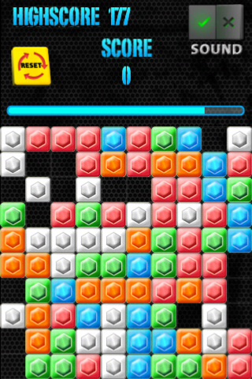

Magic Tiles for iPhone
[homepage] [index]
Chengzhi Yang 2011-06-13
Magic Tiles for iPhone is available in App Store!

Caution! Somebody says that they are addicted to this game! :)
How to play:
-In a limited time, keep taping a blank grid. Tiles having same colors will be eliminated if they are horizontally or vertically connected by the tapped grid, and you will get scores for the eliminations.
-If you taped a wrong grid, game time will decrease as penalty.
-If no more tiles can be eliminated, a new grids will be created.
Tips on Scoring:
-You have 120 seconds to play.
-1 score for each tile elimination.
-1 wrong tap results 8-second decrease in game time.
Features:
-Now support iPhone and iPod touch.
Screenshot
